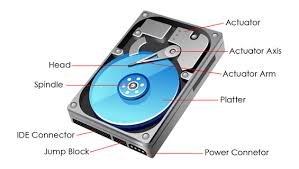

Hard Drives
Hard drives are essential storage devices that provide ample space for storing files, programs, and data in a computer system. They are responsible for permanently storing and retrieving digital information, allowing users to access and manage their data as needed.
What is a Hard Drive?
A hard drive, also known as a hard disk drive (HDD), is a non-volatile storage device that uses magnetic disks to store and retrieve digital data. It consists of one or more rigid, rapidly rotating disks with magnetic surfaces where data is recorded and accessed by read/write heads.

Key Components of a Hard Drive
A typical hard drive consists of several essential components, including:
- Platters: Platters are the rigid, circular disks coated with a magnetic material where data is stored. A hard drive may have one or multiple platters, depending on its storage capacity and design.
- Read/Write Heads: Read/write heads are small, electromagnetic devices that move across the surface of the platters to read and write data by magnetizing and sensing the magnetic fields on the disks.
- Actuator Arm: The actuator arm positions the read/write heads over specific tracks on the platters to access data. It moves the heads rapidly and precisely across the disks.
- Spindle Motor: The spindle motor spins the platters at high speeds, typically between 5,400 and 7,200 revolutions per minute (RPM), allowing the read/write heads to quickly access data.
- Controller Board: The controller board manages the communication between the hard drive and the computer system, translating logical data into physical locations on the disks and controlling the read/write operations.
Hard Drive Types
Hard drives can be classified into different types based on their physical size, interface, and performance characteristics. Common types include:
- Desktop Hard Drives: Desktop hard drives are designed for use in desktop computers and workstations. They typically have larger form factors, such as 3.5 inches, and offer higher storage capacities.
- Laptop Hard Drives: Laptop hard drives, often referred to as 2.5-inch drives, are smaller and more compact, making them suitable for portable computers and laptops.
- Solid-State Drives (SSDs): SSDs use flash memory chips instead of magnetic platters to store data. They offer faster read/write speeds, lower power consumption, and no moving parts, making them more durable and energy-efficient than traditional hard drives.
Importance of Hard Drives
Hard drives are crucial components in modern computing systems, providing reliable and high-capacity storage solutions. They allow users to store vast amounts of data, including documents, photos, videos, music, and other digital content. Additionally, hard drives are essential for storing operating systems, applications, and other system files required for the proper functioning of a computer.
Choosing the right hard drive is essential when building or upgrading a computer system. Factors to consider include storage capacity, performance (e.g., read/write speeds), form factor, interface (e.g., SATA, NVMe), and reliability (e.g., mean time between failures [MTBF]).